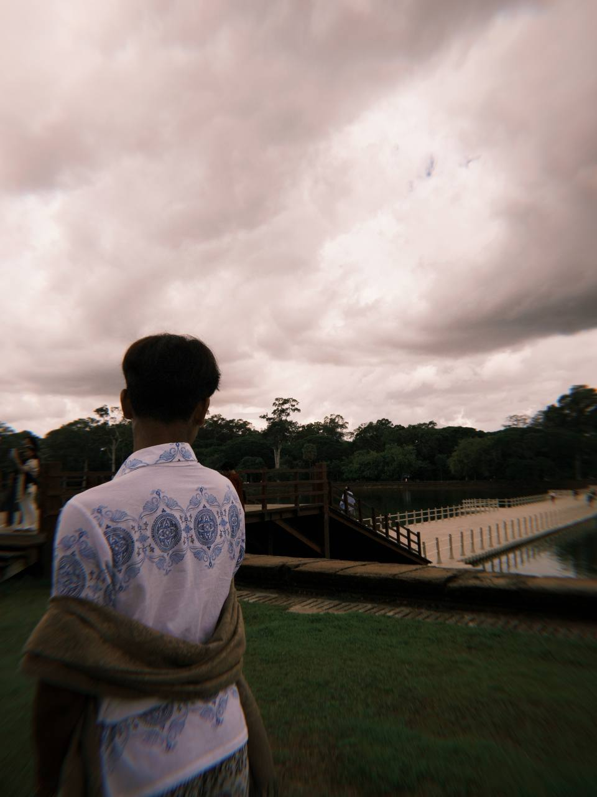

ការសិក្សា ៖ សម្រាប់ខ្ញុំផ្ទាល់ខ្ញុំគិតថាការសិក្សារបស់ខ្ញុំគឺស្ថិតនៅក្នុងកម្រិតមួយសមស្របដោយខ្ញុំអាចប្រកួតប្រជែងសមត្ថភាពជាមួយសិស្សដទៃទៀតបាន។មួយវិញទៀតបើនិយាយអោយចំពីការសិក្សាខ្ញុំគឺជាមនុស្សម្នាក់ដែលចូលចិត្តសិក្សាទាក់ទង់និងប្រវត្តិវិទ្យា ភូមិវិទ្យា និង ផែនដីវិទ្យាដោយខ្ញុំចូលចិត្តស្វែងយល់ពីសំណង់បុរាណ ទីតាំងភូិសាស្រ្ត ព្រមទាំងបញ្ហាបរិស្ថាននានានៅលើពិភពនិងនាពេលអនាគតផងដែរ។ ដោយឡែកបើនិយាយពីលទ្ធផលនៃការសិក្សារបស់ខ្ញុំវិញគឺ៖
ថ្នាក់ទី១ ទទួលបានចំណាត់ថ្នាក់លេខ៣ប្រចាំថ្នាក់/ឆ្នាំ២០១៦
ថ្នាក់ទី២ ទទួលបានចំណាត់ថ្នាក់លេខ២ប្រចាំថ្នាក់/ឆ្នាំ២០១៧
ថ្នាក់ទី៣ ទទួលបានចំណាត់ថ្នាក់លេខ២ប្រចាំថ្នាក់/ឆ្នាំ២០១៨
ថ្នាក់ទី៤ ទទួលបានចំណាត់ថ្នាក់លេខ១ប្រចាំថ្នាក់/ឆ្នាំ២០១៩
ថ្នាក់ទី៥ ទទួលបានចំណាត់ថ្នាក់លេខ១ប្រចាំថ្នាក់/ឆ្នាំ២០២០
ថ្នាក់ទី៦ ទទួលបានចំណាត់ថ្នាក់លេខ៣ប្រចាំថ្នាក់/ឆ្នាំ២០២១
ថ្នាក់ទី៧ ទទួលបានចំណាត់ថ្នាក់លេខ៤ប្រចាំថ្នាក់/ឆ្នាំ២០២២
ថ្នាក់ទី៨ ទទួលបានចំណាត់ថ្នាក់លេខ៣ប្រចាំថ្នាក់/ឆ្នាំ២០២៣
ថ្នាក់ទី៩ ទទួលបានចំណាត់ថ្នាក់លេខ២ប្រចាំថ្នាក់/ឆ្នាំ២០២៤ និងនិទ្ទេស ល្អ ក្នុងការប្រឡងសញ្ញាប័ត្រមធ្យមសិក្សាបឋមភូមិ
ចំណែកក្រៅការសិក្សាវិញខ្ញុំបានចូលរួមប្រកួតប្រជែងនិងចូលរួមការងារស្ម័គ្រចិត្តជាច្រើនដូចជា៖
ការងារក្នុងក្រុមប្រឹក្សាកុមារនិងយុវជន ពីឆ្នាំ ២០២២-២០២៥
កម្មវិធីប្រឡងគណិតវិទ្យា MOSC ឆ្នាំ២០២២ បានចូលរួម
កម្មវិធីប្រឡង Caribou ឆ្នាំ២០២២ Top14
ចូលរួមបិទកីឡាជាតិ ឆ្នាំ២០២២
កម្មវិធីប្រកួតប្រកបពាក្យ ឆ្នាំ២០២៣ ទទួលបានមេដាយ សំរិទ្ធ
កម្មវិធីប្រកួតអំណានល្បីៗ ឆ្នាំ២០២៣ ទទួលបានមេដាយមាស
កម្មវិធីបំណងប្រថ្នា ឆ្នាំ២០២៣ ដល់វគ្គផ្ដាច់ព្រ័ត្រ
ចូលរួមការបើក/បិទ Para game ឆ្នាំ២០២៣
កម្មវិធីប្រកួតនិទានរឿង ឆ្នាំ២០២៤ ទទួលបានមេដាយមាស
កម្មវិធីប្រឡងរូបវិទ្យា AMCP ឆ្នាំ២០២៤ ទទួលបានមេដាយប្រាក់
កម្មវិធីប្រឡងគីមីវិទ្យា MPC ឆ្នាំ២០២៤ ទទួលបាន certificate
កម្មវិធីប្រឡងផែនដីវិទ្យា ESCឆ្នាំ២០២៤ ទទួលបាន ជ័យលាភីកិត្តិយស
កម្មវិធីប្រឡងចំណេះដឹងទូទៅ KKH ឆ្នាំ២០២៤ ទទួលបាន ជ័យលាភីកិត្តិយស
កម្មវិធីប្រឡងគណិតវិទ្យា CIMO ឆ្នាំ២០២៤ ទទួលបាន Bronze award
Volunteer ក្នុងកម្មវិធីសង្រ្កានកូនខ្មែរ២ ឆ្នាំ២០២៤
Volunteer ក្នុងកម្មវិធីមហោស្រពសិល្បៈដំណើរខ្មែរ ឆ្នាំ២០២៤
Volunteer សម្ដែងក្នុងព្រឹត្តិការណ៍សាទរកម្ពុជា ឆ្នាំ ២០២៤
ចូលរួមសម្ភោធទឹកស្អាតបាក់ខែង ឆ្នាំ២០២៤
កម្មវិធីប្រកួតសំណេរអង្គរឆ្នាំ២០២៥ ទទួលបាន Top5
កម្មវិធីប្រឡងរូបវិទ្យា YPC ឆ្នាំ ២០២៥ ទទួលបាន certificate
កម្មវិធីប្រកួតវីដេអូ របស់ សន្និសិទ្ន និងពិរព័ណ៍បច្ចេកវិទ្យាអប់រំកម្ពុជា ឆ្នាំ២០២៥ ទទួលបានចំណាត់ថ្នាក់លេខ១
ចូលរួមកម្មវិធីក្នុងទិវាបរិស្ថានជាតិនុងអន្តរជាតិ ឆ្នាំ២០២៥ នៅឯពហុកីឡាដ្ឋានជាតិមរតកតេជោ
ចូលរួមបិទកម្មវិធីកីឡាជាតិកុមារឆ្នាំ២០២៥
បច្ចុប្បន្ននេះខ្ញុំកំពុងតែចូលរួមប្រកួតកម្មវិធីសហគ្រិនខ្មែរក្រោមប្រធានបទបម្លែងសំណល់រឹងទៅជារបស់ប្រើប្រាស់ឡើងវិញផងដែរ។
